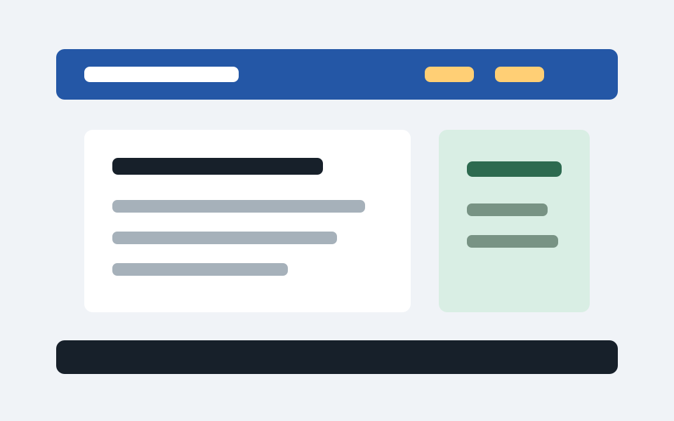
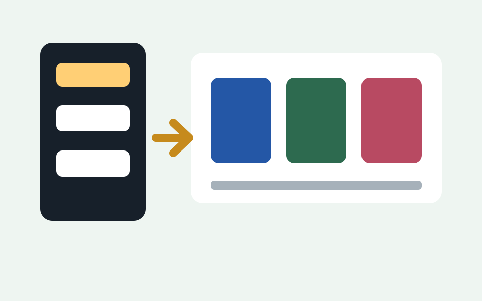
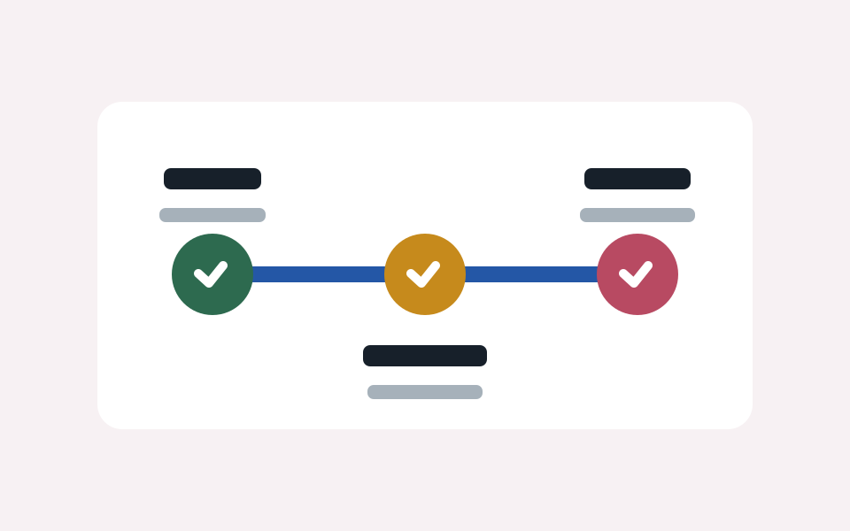

HTML
Semantic Article Page
Create a page with header, main, article, aside, and footer elements to practice readable document structure.
Practice projects
Each project below focuses on a different skill: structure, layout, styling consistency, or responsive behavior.

HTML
Create a page with header, main, article, aside, and footer elements to practice readable document structure.

CSS Layout
Build a grid of cards that shifts from one column on mobile to multiple columns on wider screens.

Git
Make a visual change, inspect the diff, stage files, and create a commit with a short, descriptive message.
Before each commit
git status to see which files changed.